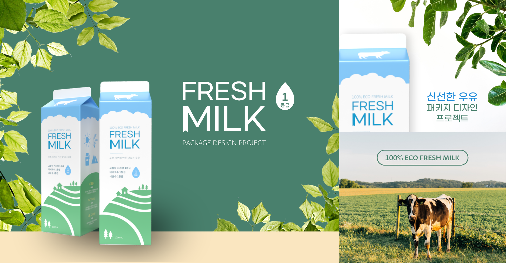

푸른 자연이 만든 맛있는 우유
100% eco fresh milk의 패키지 디자인
프로젝트를 진행하였습니다.
신선한 느낌을 위한 청량한 하늘, 산뜻한 느낌을 위한
푸른 들판을 표현하여 우유가 담긴
세상을 표현하였습니다.
또한 그에 맞춘 로고와 Fresh Milk의 정보가
한 눈에 들어오도록 물방울, 태양, 산 등의
아이콘을 이용해 효과적으로 그래픽 요소를
배치하였습니다.
제목 글꼴에서는 고딕 형태인 G마켓 산스를 써서 우유의
깔끔한 맛을 표현하였습니다. 앞면의 하늘과 들판 이미지에
어울리는 구성을 하기 위해 제목 글꼴은 변화를 주었습니다.
MILK의 M자를 보시면 책갈피 모양으로 살짝 더 두꺼운 것을
확인하실 수 있습니다. 이는 소들이 달고 다니는 번호표를
표현한 것이며, 목장의 느낌을 살리려고 하였습니다.
본문 글꼴도 마찬가지로 Sandoll 그레타산스를 이용해
고딕 형태를 이루어 시각적으로 편안함을 느끼게 하였습니다.
본문 글꼴은 큰 변화를 주지 않았지만 강조되는 부분에
두께 변화를 주어 잘 읽히도록 하였습니다.
우유 패키지는 청량한 색감을 위해 파랑, 초록을 이용하여
보기만 해도 공기의 선선함이 다가오는 듯한 느낌을
연출하였습니다. 우유의 색깔인 하얀색과 어우러져 더욱
깨끗하고 맑은 매력을 전달합니다.
웹사이트에서의 컬러는 패키지와 사뭇 다르지만 자연이
그늘에서 숨쉬는 듯한 안정감이 느껴지도록 차분한 색감을
사용하였습니다.